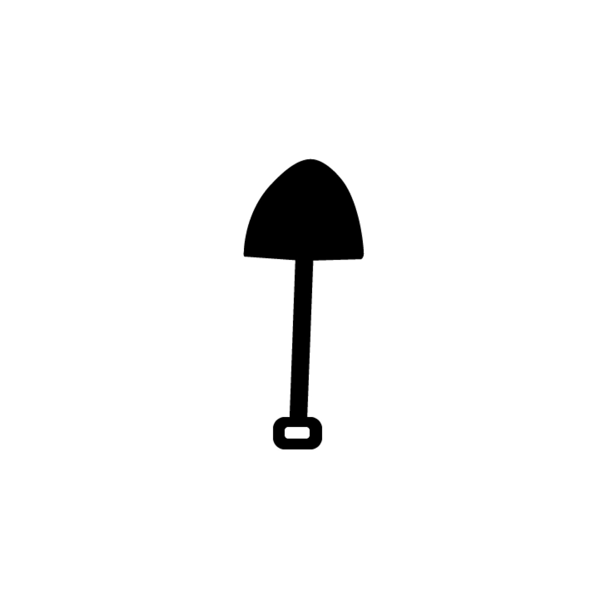

магистр хореографического искусства Анастасия Соболева, окончившие Академию Русского Балета им. А. Я. Вагановой (научно-творческая лаборатория композиции современных форм танца) и выпускник школа интерпретации современного искусства «Пайдейя» Глеб Блокович) и художницей Софией Драбовской. В первую очередь, нужно сказать, что основатели спайки родились в городе Ярославле. И все как один были свидетелями затухания культурного фейерверка 90-ых, что не могло не отразится на их последующих шагах.
В 2016г Перекоп перебираются в Санкт-Петербург, что также сильнейшим образом влияет на их мировоззрение.
Перекоп сегодня:
София Драбовская, Иван Царик, Александр Максименко, Александра Быкова, Лев Мунилов, Екатерина Подобуева, Павел Яковлев.ПЕРЕКОП ведет свою деятельность в поле междисциплинарности, на стыке традиционных и новейших медиа. Приоритетной задачей спайки в сфере создания художественного высказывания является пробуждение самосознание и деатомизация зрителя. Спайка создает вокруг себя «здоровую» культурную среду для формирования, реализации комплекса мер, учитывающих особенности социальной,культурной, политической ситуации как внутри страны, так и за её пределами. Этот контекст формирует предпосылки для консолидации усилий, направленных на создание образов будущего, а значит, на тотальную демемориализации, деимпериализацию общественного дискурса.
ПЕРЕКОП опирается на систему собственных ценностей и интересов, сложившихся в процессе деятельности, таких как: равенство возможностей, политическое, самостоятельность, китч, поп.культура, кризис капитала, воля, кринж, ошибки, поэзия, теория, спорт, возвышенное, труд, квазидеколониализм, пластичность, сопротивление, религия, экологичность, Западное, экономика, патриотизм, эйджизм, суверенитет, история, порядочность, Великое, логика, виртуозность, горизонтали, область незнания, наука,сексуальность, самоцензура, сексизм, воображение, а так же, стремление к ответственному исполнению нравственного долга перед самими собой и своей семьёй.
Важнейшей функцией ПЕРЕКОПА является защита физического и ментального здоровья. В условиях идейного гуманитарного гуманистического кризиса, искусство снова становится оружием духовной обороны. Фальсификация, ложь, подмена , должны рассматриваться как серьёзная и непосредственная угроза личной и общественной безопасности. Этой, отнюдь не мифической угрозе, поставлен надежный визионерский заслон из богатого инструментария спайки: перформанс, живопись, танец, инсталляция, текст, музыка, кино.
ПЕРЕКОП бьёт в барабаны, трубит, танцует на все четыре стороны, о том что искусство, по-прежнему может изменять и спасать мир! ПЕРЕКОП просит доверять, он полон ярости, нежно приглашает нас преодолеть чудовищную реальность и стать соучастниками строительства другого мира! Вперёд!по всем вопросам: perekop.russia@yandex.ru +7981-903-9312 дополнительные ресурсы: t.me/pere_kop www.instagram.com/pere_kop/
